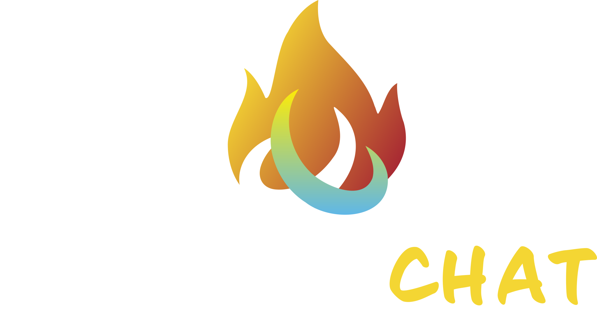

<!DOCTYPE html>
<html lang="en">
<head>
<meta charset="UTF-8">
<meta name="viewport" content="width=device-width, initial-scale=1.0, maximum-scale=1.0, user-scalable=no">
<title>F1R3SIDECHAT — Draft Review v1 (Hannah Adams, April 2026)</title>
<script crossorigin src="https://cdnjs.cloudflare.com/ajax/libs/react/18.2.0/umd/react.development.js"></script>
<script crossorigin src="https://cdnjs.cloudflare.com/ajax/libs/react-dom/18.2.0/umd/react-dom.development.js"></script>
<script src="https://cdnjs.cloudflare.com/ajax/libs/babel-standalone/7.23.9/babel.min.js"></script>
<style>
  * { box-sizing: border-box; margin: 0; padding: 0; }
  html, body { width: 100%; min-height: 100vh; background: #000; color: #fff; overflow-x: hidden; }
  input::placeholder, textarea::placeholder { color: #A0A0A0; opacity: 1; }
  @media (max-width: 768px) {
    .game-header { flex-wrap: wrap !important; padding: 10px 12px !important; }
    .story-layout { flex-direction: column !important; }
    .game-sidebar-left { display: none !important; }
    .story-sidebar { width: 100% !important; min-width: 100% !important; border-left: none !important; border-top: 1px solid #007bc466 !important; max-height: none !important; flex-direction: column !important; gap: 16px !important; padding: 16px !important; }
    .story-main { padding: 20px 16px !important; }
  }
  @media (max-width: 480px) {
    .game-header { padding: 8px 10px !important; }
    .game-header span[style*="fontSize:29"] { font-size: 22px !important; letter-spacing: 2px !important; }
  }
</style>
</head>
<body>
<div id="root"></div>
<script type="text/babel">
const { useState, useEffect, useCallback, useRef, useReducer } = React;

const BRAND = {
  yellow: "#F3D630", sage: "#8BB999", sky: "#3FA9F5",
  surface: "#000000", card: "#0c0c18",
  border: "#007bc466",
  stroke: "linear-gradient(90deg, #F3D630, #8BB999)",
  text: "#ffffff", textMuted: "#ffffff", textDim: "#ffffff",
  textSecondary: "#A0A0A0"
};
const FONTS = `@import url('https://fonts.googleapis.com/css2?family=Josefin+Sans:wght@300;400;600;700&family=Source+Sans+3:ital,wght@0,300;0,400;0,600;0,700;1,300;1,400&display=swap');`;
const FH = "'Josefin Sans', sans-serif";
const FB = "'Source Sans 3', sans-serif";
const CHAT_ACCENT = "#8BB999"; // brand sage

function SideChatLogo({height=240}) {
  return ;
}

const STORY = {
  title: "The Cartographer of Lost Rivers",
  genre: "Mystery / Fantasy",
  author: { id: "p2", name: "Aria", color: BRAND.sky },
  synopsis: "A blind cartographer hears rivers flowing beneath the streets. When buildings start collapsing into hidden waterways, she must map the invisible before the city drowns.",
  readers: 234,
  chapters: [
    { id: "ch1", num: 1, title: "The Sound Beneath Concrete", authorId: "p2", status: "published",
      text: "The first time Maren heard the river, she thought it was rain.\n\nShe was standing at the corner of Ash Street and Viaduct, her white cane tapping the familiar rhythm against the curb. The city hummed its usual frequencies \u2014 diesel idling, a busker\u2019s violin two blocks east, the staccato of heels on the pedestrian bridge above. But underneath all of it, threading through the concrete like a whispered secret, was the sound of moving water.\n\nNot storm drains. Not burst pipes. This was older. Deeper. A current that remembered being a river.\n\n\u201CYou hear that?\u201D she asked the dog. Sable\u2019s ears perked, but the guide dog gave no indication of alarm. Water was water. But Maren\u2019s hands were trembling on the harness.\n\nShe had been blind since she was nine \u2014 long enough to have rebuilt her entire map of the world in sound and texture. She knew this intersection by its acoustic signature the way sighted people knew it by its traffic light. And this sound did not belong here.\n\nShe knelt, pressing her palm flat against the sidewalk. The vibration was unmistakable. Something was flowing, six feet below her fingers, in a direction that no municipal map acknowledged.",
      wordCount: 198, applause: 47 },
    { id: "ch2", num: 2, title: "The Archive of Buried Channels", authorId: "p2", status: "published",
      text: "The Historical Society occupied the top floor of a building that should have been condemned. Maren climbed the stairs by counting \u2014 forty-two steps, a landing that smelled of mildewed carpet, then twenty more steps to a door that stuck in its frame.\n\n\u201CI need your oldest maps,\u201D she told the archivist, a man whose voice suggested tweed and resignation. \u201CThe ones from before the city paved the rivers.\u201D\n\nA silence. Then the scrape of a chair.\n\n\u201CNo one has asked for those in years,\u201D he said. \u201CThey\u2019re in the basement. Which is ironic, given what\u2019s down there.\u201D\n\nHe meant it as a joke. But when they descended and Maren pressed her hand to the basement wall, she felt it \u2014 the thrum of a current so close it seemed to push against the foundation stones. The archivist didn\u2019t notice. People who could see rarely listened to buildings.",
      wordCount: 156, applause: 32 },
    { id: "ch3", num: 3, title: "Cracks in the Foundation", authorId: null, status: "open", text: "", wordCount: 0, applause: 0 }
  ]
};

const CHARACTERS = [
  { id: "maren", name: "Maren", role: "Blind cartographer", driver: "p2", color: BRAND.yellow },
  { id: "sable", name: "Sable", role: "Guide dog", driver: null, color: "#8B7355" },
  { id: "archivist", name: "The Archivist", role: "Keeper of forgotten maps", driver: "p5", color: BRAND.sage },
  { id: "river", name: "The River", role: "The buried consciousness", driver: null, color: BRAND.sky },
  { id: "mayor", name: "Mayor Calloway", role: "Wants rivers hidden", driver: null, color: "#CC4444" }
];

const PORTRAITS = { hannah:"images/hannah-adams.jpg", greg:"images/greg-meredith.jpg", mike:"images/mike-stay.jpg", lilia:"images/lilia-rusu.jpg", jeff:"images/jeff-turner.jpg", stephen:"images/stephen-alexander.jpg" };
const DEMO_PLAYERS = [
  { id:"p2", name:"Aria", portrait:PORTRAITS.greg, role:"creator" },
  { id:"p3", name:"Kael", portrait:PORTRAITS.mike, role:"reader" },
  { id:"p4", name:"Nova", portrait:PORTRAITS.lilia, role:"reader" },
  { id:"p5", name:"Zeph", portrait:PORTRAITS.jeff, role:"creator" },
  { id:"p6", name:"Onyx", portrait:PORTRAITS.stephen, role:"reader" }
];
const COMMENTS = [
  { id:1, userId:"p3", name:"Kael", chapterId:"ch1", text:"The acoustic mapping premise is brilliant. Her blindness isn\u2019t a limitation \u2014 it\u2019s her superpower.", applause:12 },
  { id:2, userId:"p6", name:"Onyx", chapterId:"ch1", text:"Knowing an intersection by its acoustic signature... world-building that makes you stop and re-read.", applause:8 },
  { id:3, userId:"p4", name:"Nova", chapterId:"ch2", text:"People who could see rarely listened to buildings. This line is the whole thesis of the story.", applause:23 }
];
const COSTS = { DRIVE:100, AI_COAUTHOR:500, TALK_AUTHOR:250, TIP_MIN:10 };

function Avatar({src, size=32}) { return ; }
function HumanIcon({size=14, color="#fff"}) { return (<svg width={size} height={size} viewBox="0 0 16 16" fill="none"><circle cx="8" cy="5" r="3" stroke={color} strokeWidth="1.5" fill="none"/><path d="M2.5 15c0-3 2.5-5.5 5.5-5.5s5.5 2.5 5.5 5.5" stroke={color} strokeWidth="1.5" fill="none" strokeLinecap="round"/></svg>); }

function HowBtn({onClick}) { return <button onClick={onClick} style={{background:"#000",border:`1px solid ${BRAND.border}`,color:"#fff",borderRadius:20,padding:"12px 24px 8px",fontSize:16,cursor:"pointer",fontFamily:FH,letterSpacing:2,fontWeight:300,display:"inline-flex",alignItems:"center",justifyContent:"center",lineHeight:1,minHeight:38,whiteSpace:"nowrap"}}>HOW THIS WORKS</button>; }

function TourIcon({type, color="rgba(255,255,255,0.55)", size=48}) {
  const icons = {
    dna: <svg width={size} height={size} viewBox="0 0 48 48" fill="none"><path d="M16 6c0 8 16 10 16 18s-16 10-16 18" stroke={color} strokeWidth="1.5" fill="none"/><path d="M32 6c0 8-16 10-16 18s16 10 16 18" stroke={color} strokeWidth="1.5" fill="none"/><line x1="16" y1="15" x2="32" y2="15" stroke={color} strokeWidth="1" opacity=".4"/><line x1="16" y1="24" x2="32" y2="24" stroke={color} strokeWidth="1" opacity=".4"/><line x1="16" y1="33" x2="32" y2="33" stroke={color} strokeWidth="1" opacity=".4"/></svg>,
    ear: <svg width={size} height={size} viewBox="0 0 48 48" fill="none"><path d="M30 10c6 3 10 9 10 16s-4 14-10 16" stroke={color} strokeWidth="1.5" strokeLinecap="round"/><path d="M26 16c3 1.5 5 5 5 8s-2 7-5 8" stroke={color} strokeWidth="1.5" strokeLinecap="round"/><circle cx="18" cy="24" r="4" fill={color} opacity=".5"/><line x1="8" y1="24" x2="14" y2="24" stroke={color} strokeWidth="1.5" strokeLinecap="round"/></svg>,
    selection: <svg width={size} height={size} viewBox="0 0 48 48" fill="none"><path d="M8 36L24 8l16 28H8z" stroke={color} strokeWidth="1.5" strokeLinejoin="round"/><circle cx="24" cy="28" r="4" fill={color} opacity=".4"/><line x1="16" y1="32" x2="32" y2="32" stroke={color} strokeWidth="1" opacity=".4"/></svg>,
    chain: <svg width={size} height={size} viewBox="0 0 48 48" fill="none"><rect x="8" y="14" width="14" height="20" rx="4" stroke={color} strokeWidth="1.5"/><rect x="26" y="14" width="14" height="20" rx="4" stroke={color} strokeWidth="1.5"/><line x1="22" y1="21" x2="26" y2="21" stroke={color} strokeWidth="1.5" strokeLinecap="round"/><line x1="22" y1="27" x2="26" y2="27" stroke={color} strokeWidth="1.5" strokeLinecap="round"/></svg>,
    globe: <svg width={size} height={size} viewBox="0 0 48 48" fill="none"><circle cx="24" cy="24" r="18" stroke={color} strokeWidth="1.5"/><ellipse cx="24" cy="24" rx="9" ry="18" stroke={color} strokeWidth="1.5"/><line x1="6" y1="24" x2="42" y2="24" stroke={color} strokeWidth="1.5"/><path d="M8 14h32M8 34h32" stroke={color} strokeWidth="1" opacity=".5"/></svg>,
    book: <svg width={size} height={size} viewBox="0 0 48 48" fill="none"><path d="M8 8h14c2 0 2 2 2 2v28s0-2-2-2H8V8z" stroke={color} strokeWidth="1.5"/><path d="M40 8H26c-2 0-2 2-2 2v28s0-2 2-2h14V8z" stroke={color} strokeWidth="1.5"/><line x1="12" y1="16" x2="20" y2="16" stroke={color} strokeWidth="1" opacity=".5"/><line x1="12" y1="20" x2="18" y2="20" stroke={color} strokeWidth="1" opacity=".5"/><line x1="28" y1="16" x2="36" y2="16" stroke={color} strokeWidth="1" opacity=".5"/><line x1="28" y1="20" x2="34" y2="20" stroke={color} strokeWidth="1" opacity=".5"/></svg>,
    spectrum: <svg width={size} height={size} viewBox="0 0 48 48" fill="none"><rect x="6" y="32" width="8" height="10" rx="1" fill={color} opacity=".3"/><rect x="16" y="24" width="8" height="18" rx="1" fill={color} opacity=".45"/><rect x="26" y="16" width="8" height="26" rx="1" fill={color} opacity=".6"/><rect x="36" y="8" width="8" height="34" rx="1" fill={color} opacity=".8"/></svg>,
    bot: <svg width={size} height={size} viewBox="0 0 48 48" fill="none"><rect x="10" y="14" width="28" height="24" rx="5" stroke={color} strokeWidth="1.5"/><circle cx="19" cy="26" r="3" fill={color}/><circle cx="29" cy="26" r="3" fill={color}/><path d="M18 33c0 0 2.5 3 6 3s6-3 6-3" stroke={color} strokeWidth="1.5" strokeLinecap="round"/><line x1="24" y1="6" x2="24" y2="14" stroke={color} strokeWidth="1.5" strokeLinecap="round"/><circle cx="24" cy="5" r="2.5" fill={color}/></svg>,
  };
  return icons[type] || null;
}

function TourOverlay({onClose}) {
  const slides = [
    { icon:"book", title:"STORIES ARE\nBETTER TOGETHER", body:"A serial narrative unfolds in real time. You arrive as a reader. If the story moves you, you can step into it \u2014 comment, tip, drive a character, or propose where the plot goes next." },
    { icon:"spectrum", title:"FOUR WAYS IN\nONE SPECTRUM", body:"Reader (free) \u2192 Kibitzer (comment for free) \u2192 Character Driver (pay to take the wheel of a character) \u2192 Meta-Author (pay to propose plot changes). Deeper participation costs more tokens." },
    { icon:"bot", title:"AI IS A\nCHARACTER TOO", body:"The AI co-author isn\u2019t hidden. It\u2019s a named participant in the story, visible and addressable. Human and AI write together, publicly. The process is part of the art." },
    { icon:"chain", title:"BUILT ON\nF1R3FLY", body:"Every chapter, every comment, every character turn is a signed transaction on a F1R3FLY shard. The story\u2019s provenance is permanent, auditable, and community-owned." },
  ];
  const [si, setSi] = useState(0);
  const s = slides[si];
  const isLast = si === slides.length - 1;
  return (
    <div style={{position:"fixed",inset:0,background:"rgba(0,0,0,0.95)",backdropFilter:"blur(12px)",zIndex:200,display:"flex",alignItems:"center",justifyContent:"center",fontFamily:FH}} onClick={onClose}>
      <style>{{`@keyframes tourIn{from{opacity:0;transform:scale(0.95) translateY(8px)}to{opacity:1;transform:scale(1) translateY(0)}}`}}</style>
      <div onClick={e=>e.stopPropagation()} style={{animation:"tourIn .35s ease-out",maxWidth:460,width:"90%",padding:"48px 36px 40px",border:`1px solid #007bc466`,borderRadius:14,background:"#000",textAlign:"center"}}>
        <div style={{marginBottom:20}}><TourIcon type={s.icon} size={48}/></div>
        <div style={{fontSize:20,fontWeight:700,letterSpacing:4,color:BRAND.yellow,lineHeight:1.7,whiteSpace:"pre-line",margin:"0 0 16px",fontFamily:FH}}>{s.title}</div>
        <div style={{width:80,height:1,background:"linear-gradient(90deg, #F3D630, #8BB999)",margin:"0 auto 20px"}}/>
        <div style={{fontSize:17,color:"#fff",lineHeight:1.6,fontFamily:FB,marginBottom:36}}>{s.body}</div>
        <div style={{display:"flex",justifyContent:"center",gap:8,marginBottom:28}}>
          {slides.map((_,i)=><div key={i} onClick={()=>setSi(i)} style={{width:10,height:10,borderRadius:"50%",background:i===si?BRAND.yellow:"rgba(255,255,255,0.2)",cursor:"pointer",transition:"background .2s"}} />)}
        </div>
        <div style={{display:"flex",justifyContent:"center",gap:16}}>
          {si > 0 && <button onClick={()=>setSi(si-1)} style={{background:"#000",border:`1px solid ${BRAND.border}`,color:"#fff",borderRadius:20,padding:"12px 24px 8px",fontSize:16,fontFamily:FH,letterSpacing:2,cursor:"pointer",display:"inline-flex",alignItems:"center",justifyContent:"center",lineHeight:1,minHeight:38}}>BACK</button>}
          <button onClick={()=>isLast?onClose():setSi(si+1)} style={{background:"linear-gradient(135deg, #5c0269, #7b0429)",border:"none",color:"#fff",borderRadius:20,padding:"12px 28px 8px",fontSize:16,fontFamily:FH,letterSpacing:2,fontWeight:600,cursor:"pointer",boxShadow:"0 0 16px rgba(123,4,41,0.4)",display:"inline-flex",alignItems:"center",justifyContent:"center",lineHeight:1,minHeight:38}}>{isLast?"LET\u2019S GO":"NEXT"}</button>
        </div>
      </div>
    </div>
  );
}

function BuiltOnBadge() {
  return (
    <div style={{position:"fixed",bottom:16,left:"50%",transform:"translateX(-50%)",zIndex:100,cursor:"pointer"}} onClick={()=>window.open&&window.open("https://f1r3fly.io","_blank")}>
      
    </div>
  );
}

ReactDOM.createRoot(document.getElementById('root')).render(<F1R3SideChat/>);
</script>
</body>
</html>